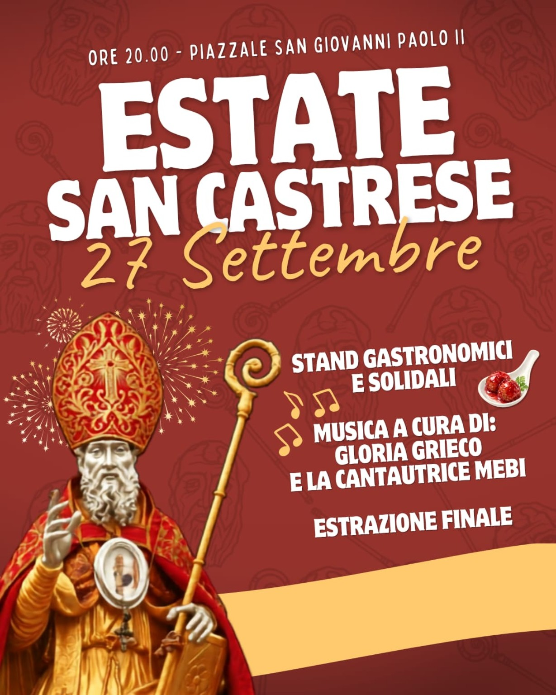

Domenica 27 settembre 2026
Estate San Castrese.
Estate San Castrese.
Dalle ore 20:00.
Appuntamento al Piazzale San Giovanni Paolo II per una serata di condivisione con stand gastronomici e solidali, musica e l'estrazione finale.
Marano di Napoli · Piazzale San Giovanni Paolo II
Musica: Gloria Grieco e la cantautrice Mebi.